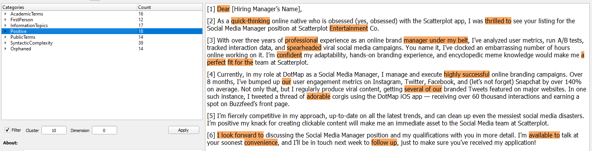

Choose a Cluster
Pick a rhetorical cluster to visualize results.
In the Dictionary Navigation Panel click the desired cluster
Text features that correspond to the selected category are highlighted.

Note: The Content section of the Dictionary Navigation
Panel provides a definition of the selected category. See Clusters for more information.
Choose a Dimension or LAT
Further specify what patterns are shown based on Dimension and Language Action Type